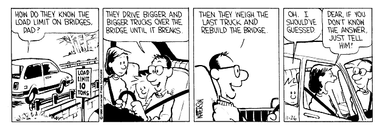

Where do numbers come from?
Scientists and engineers work with numbers constantly. Physical constants, values for the specific heat index or measures of strength or flexibility of some material, resistance of some component in an electrical device, etc., etc. Most of these numbers come from some process that generated data and led to a calculation that produced the number. Like this one

Or maybe not quite like that one.
Thought experiment – How many dimes?
Here’s a thought experiment for you. Suppose a middle school class has collected a large number of dimes (10-cent coinds) in a sack. Before bringing the money to the bank, they would like to estimate how many dimes they have (using tools and methods that 6th graders have at their disposal). You’ve been brought in to consult with them about how they should do this.
What method would you suggest? Why?
What other methods would be possible? What makes your proposed method better?
For your favorite method and others, identify factors that lead the resulting estimate to be different from the exact number of dimes in the sack.
Some important terms
estimand/measureand The number we want to know. The “truth.” In our example this is the number of dimes in the bag. Typically this will be a number that describes some process or population, and typically it will be impossible to know the value exactly.
estimate/measurement The value calculated from our data. This may be as simple as recording a value reported by some device, or it may involve recording multiple values, perhaps of multiple variables, maybe at multiple times, and making some computations with that data.}
error The difference between the estimate and the estimand. Because we don’t know the estimand exactly, we can’t know the error exactly either. But thinking about what the error could be is a big part of understanding the statistical properties of an estimation method. Generally, we want methods where errors tend to be small (so our estimate is “likely to be close to the estimand”) and centered around 0 (so we’re “right on average”).
systematic (component of) error A component of error that makes our estimate biased – in other words, leads the estimate to be either an over- or under-estimate. For example, neglecting the weight of the sack would lead us to overestimate the weight of the dimes, and therefore overestimate the number of dimes. Another way to express this idea is “a tendency to be off in a certain direction.”
random (component of) error A component of error that leads to variability in estimates (but not a particular tendency toward over- or under-estimation). If random errors are larger, there will be more variability in estimates, so we will be less confident that the estimand and estimate are close together – although some estimates may still be very close to the estimand, just by chance.
One of the big questions in statistics is this:
What does our estimate tell us about the estimand?
We will eventually learn techniques for quantifying (and attempting to reduce) the effects of error in our measurements.